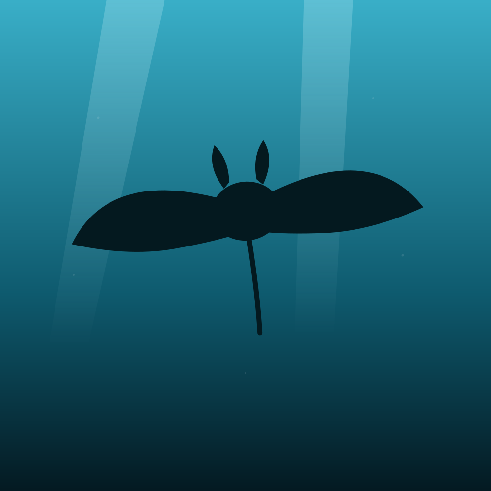
What the surface never shows you.
A window into the Andaman blue — turtles, mantas, coral in full colour, and the quiet, weightless in-between. Tap any frame to open it.
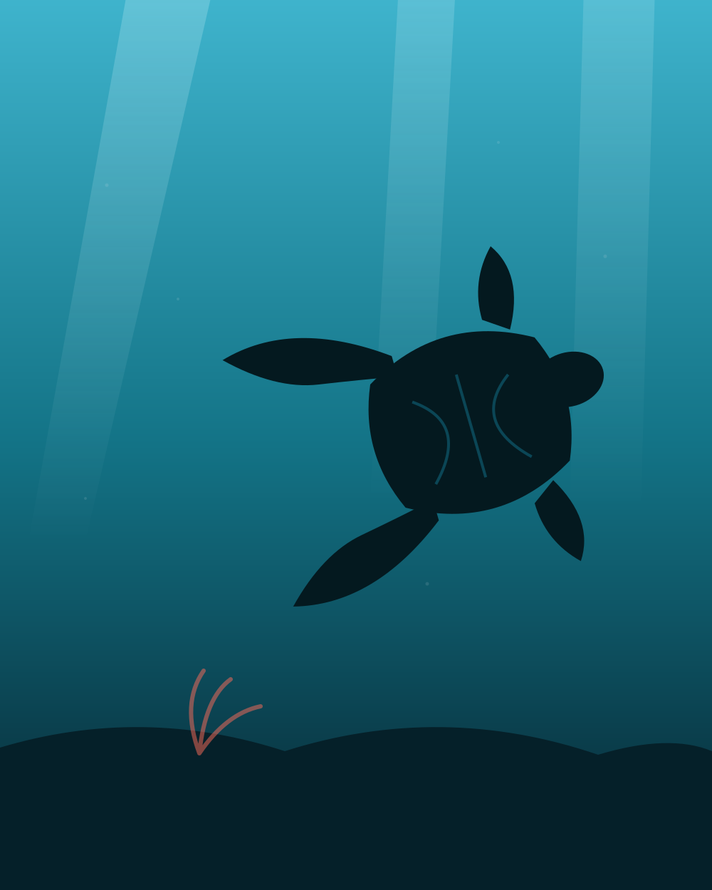
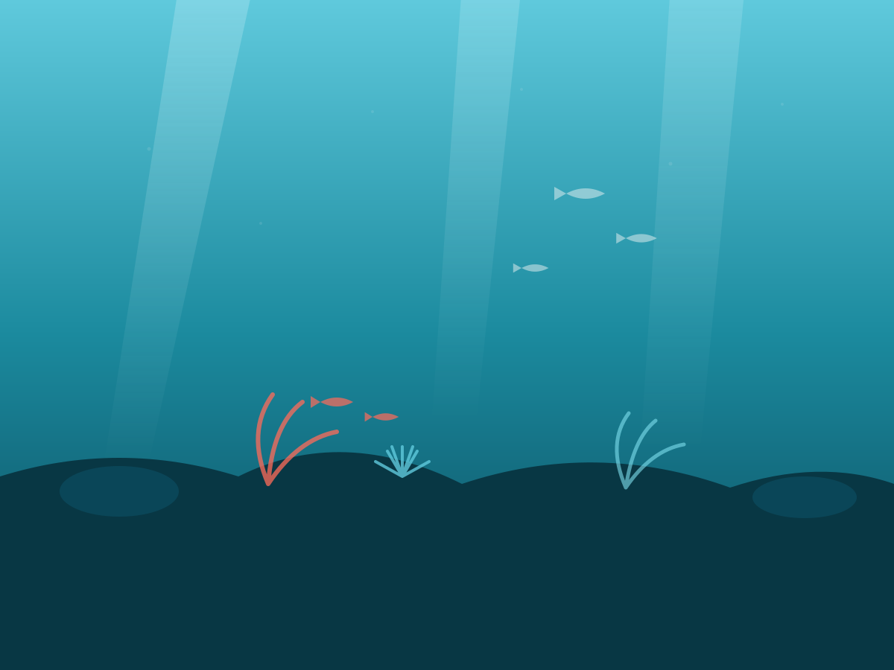
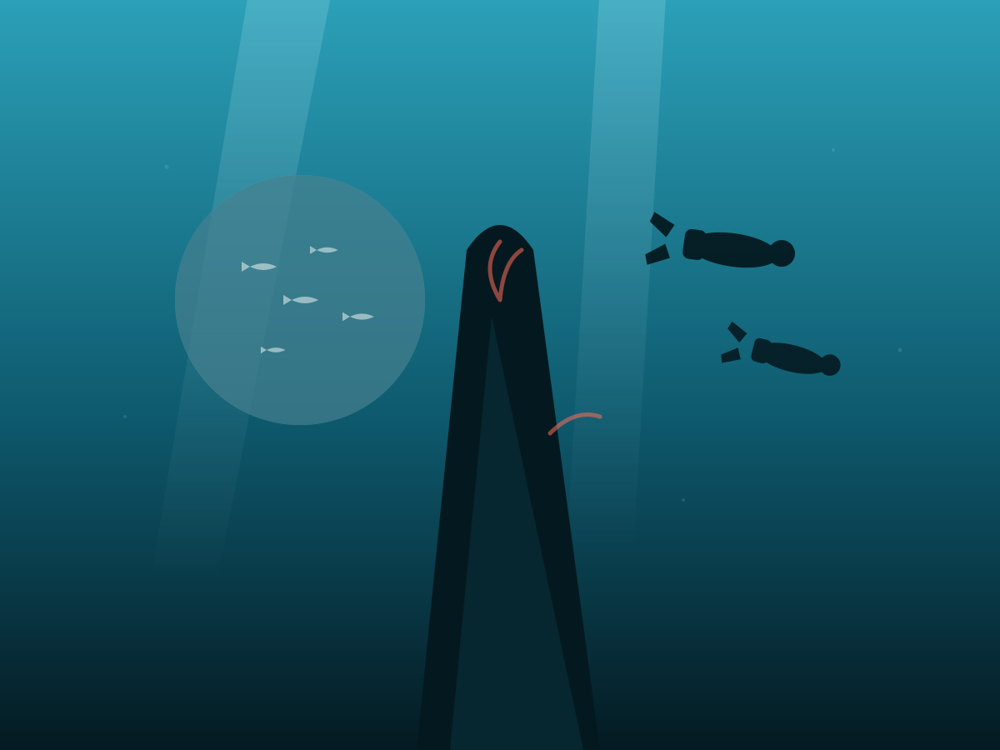
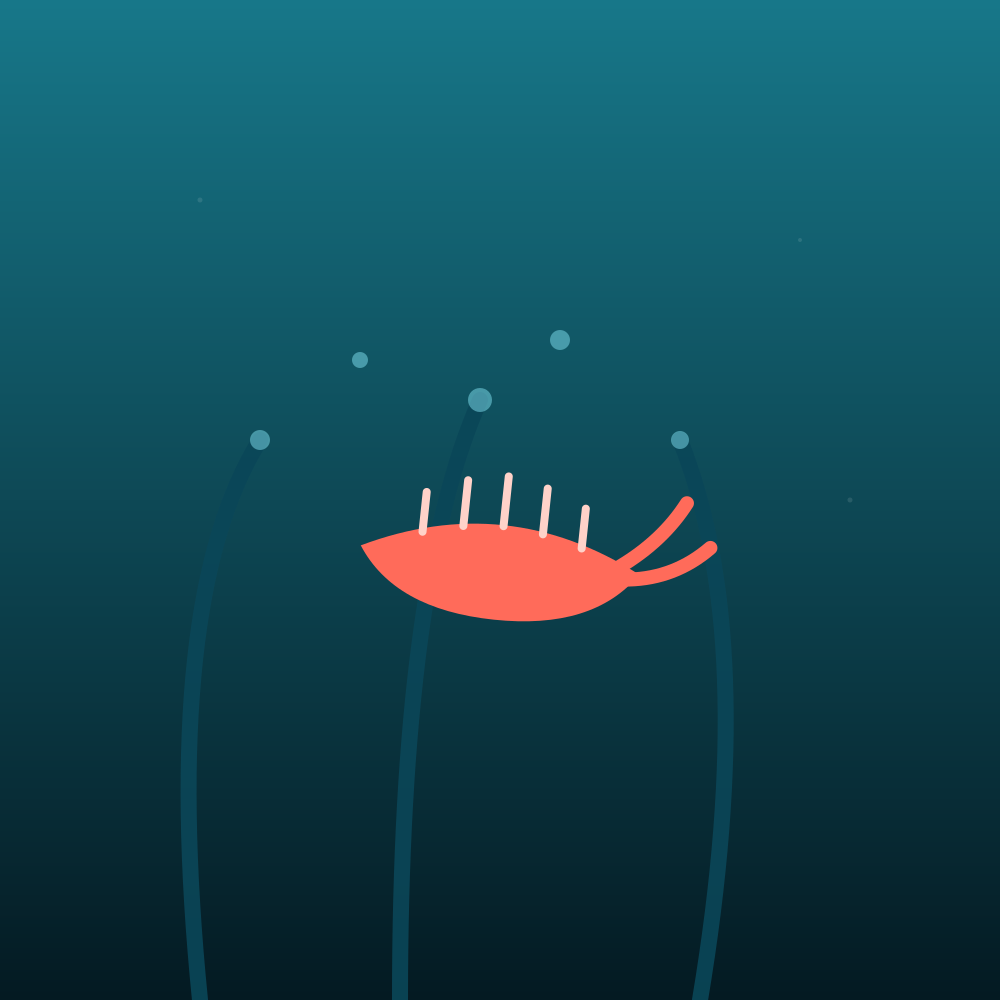
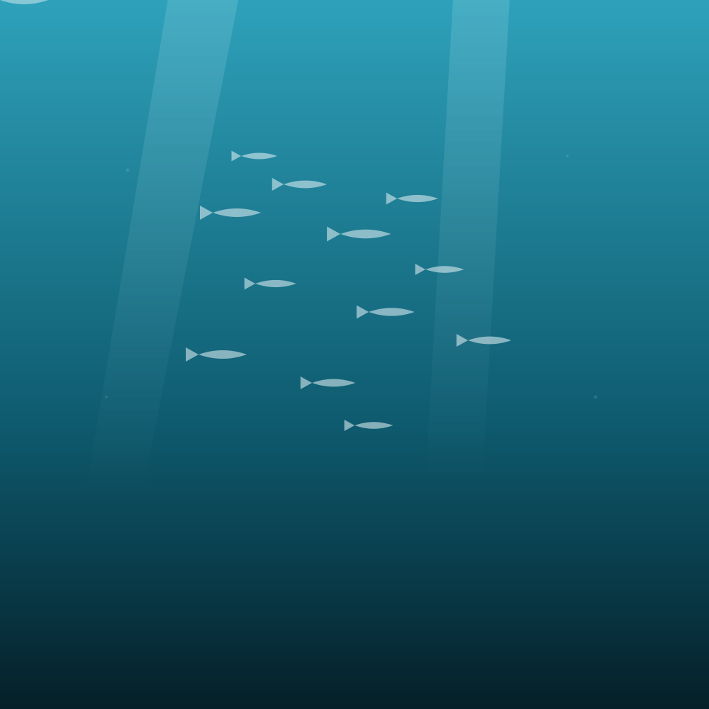
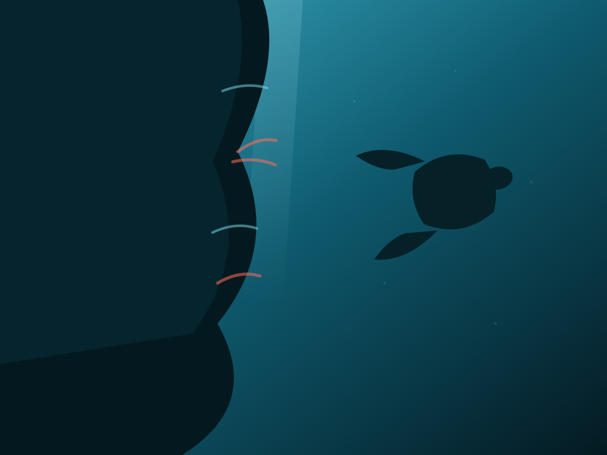
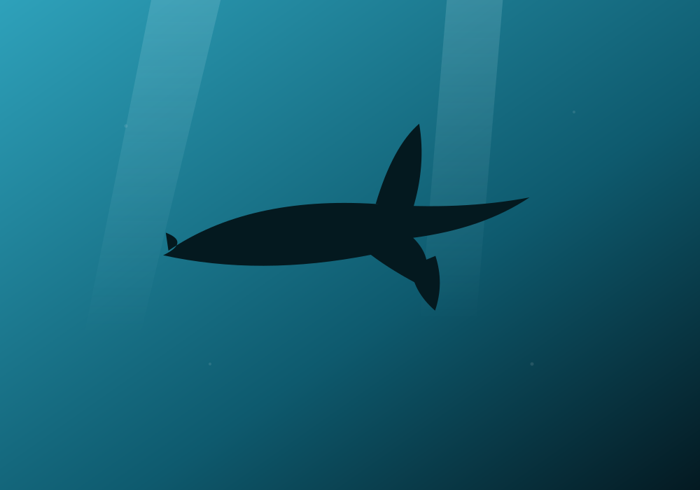
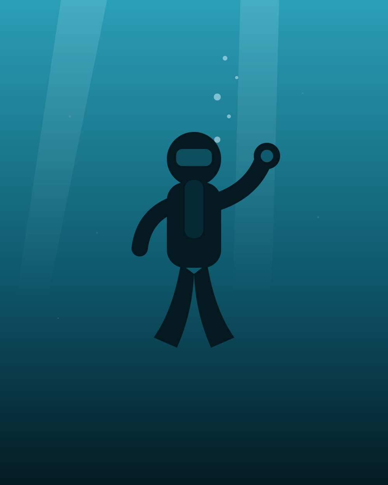

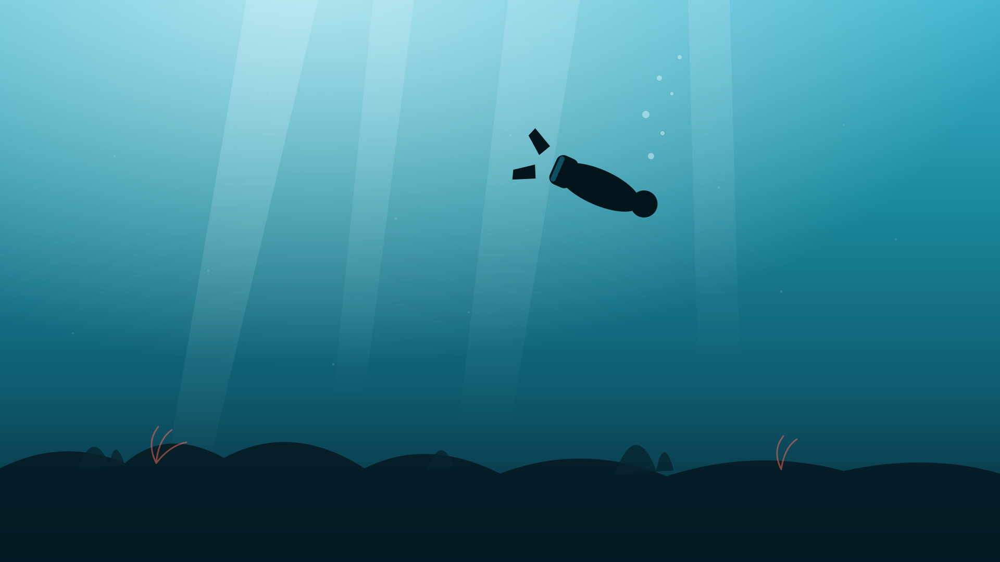
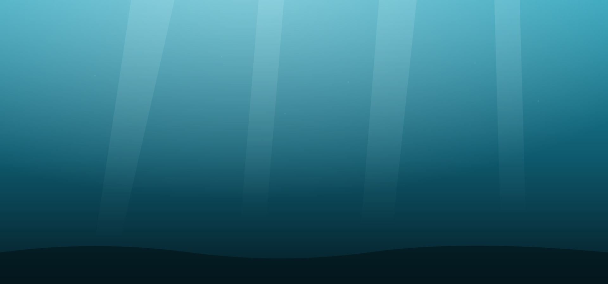
These are placeholder illustrations standing in for our reef photography. Come make your own frames